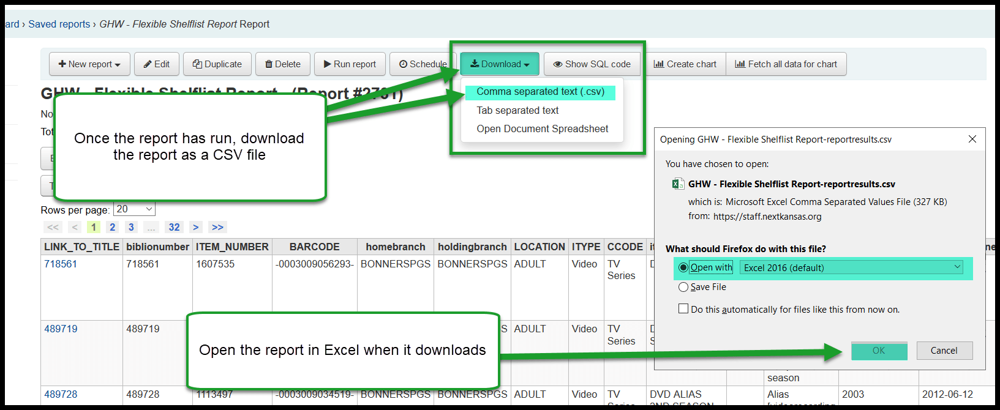
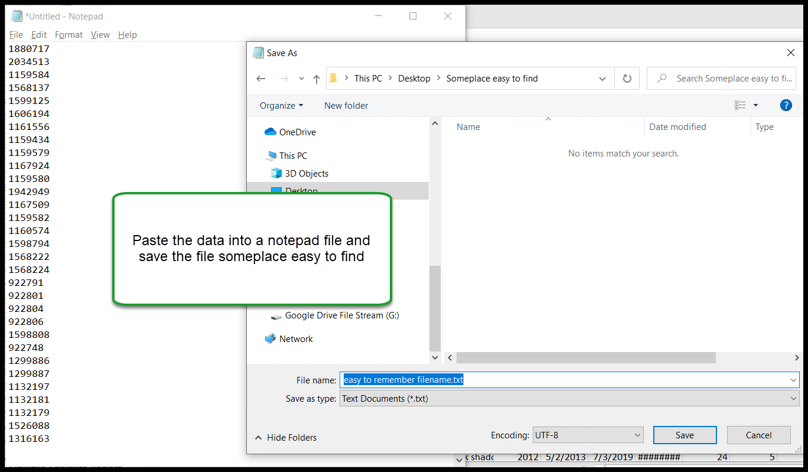
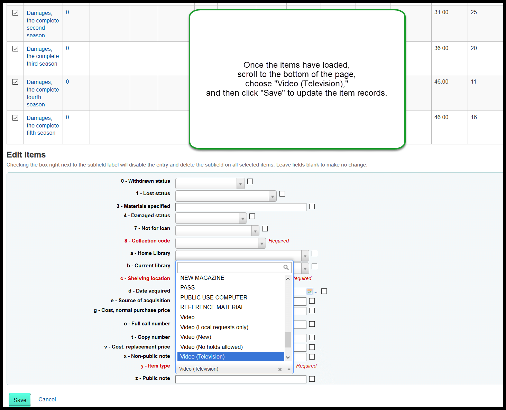

TV Series collection code to Video (Television) item type¶
We are adding a new item type in November of 2020 that will allow libraries to check out videos with TV content for different loan periods than other videos. In order for a library to take advantage of this change, there are several steps that need to happen.
Circulation rule changes¶
All circulation rules have been updated so that each NVIDEO rule has a corresponding NVIDTV rule that matches it. If you want NVIDTV items at your library to check out for a different length of time than other videos you need to request that the circulation rules for the NVIDTV item type be changed by sending an e-mail to nexthelp@nekls.org
Change items to new item type¶
In addition to any rule changes, any items you want to circulate based on those rules need to have their item types updated from their current item types to the new NVIDTV item type. To make this change you will need to:
- Run report 2731 with these parameters:
- Item home library: choose your library
- Item type: choose VIDEO - (All 4 VIDEO item types)
- Item collection code: Choose TV Series
- Leave all other settings at their defaults
- Download the report and open the file in Excel

- Once open, highlight and copy up to 500 item numbers
- Paste the data into a notepad file and save the file somewhere you can locate it easily

- Open the batch item modification tool and set the radio button to “Item number file”
- Click on “Browse” to select the file you just saved
- Once the file is selected, click on “Continue” to load the items into the batch modification tool
- Once the items have loaded, scroll to the bottom of the page, choose “Video (Television),” and then click “Save” to update the item records

- If you need to change the item type on more than 500 items, repeat these steps until all of the items have been changed